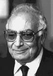

(1923 – )

Hayatı boyunca Nobel Edebiyat Ödülü'ne en fazla aday gösterilen yazarlardan biri olan ve romanlarıyla Türkiye'yi ve Türk insanını tüm dünyaya tanıtan Yaşar Kemal, yaşamını destansı bir yazar ve onurlu bir aydın olarak sürdürmektedir.
Asıl adı Kemal Sadık Gökçeli olan Yaşar Kemal, 1923 yılında Adana'nın Göğceli köyünde, Nigâr Hanım ile çiftçi Sadık Efendi'nin oğlu olarak dünyaya geldi. Aslen Van-Erciş yolu üzerinde ve Van Gölü'ne yakın Muradiye ilçesine bağlı Ernis (bugün Günseli) köyünden olan ailesi I. Dünya Savaşı'ndaki işgal yüzünden uzun bir göç süreci sonunda Adana'nın Osmaniye ilçesine (bugün il) bağlı Hemite (bugün Gökçedam) Köyü'ne yerleşmişti. Küçük yaşta geçirdiği bir kaza nedeniyle bir gözünü kaybeden Yaşar Kemal, beş yaşındayken babasının Hemite Camii'nde namaz kılarken öldürülmesine tanık oldu. Burhanlı Köyü ilkokulunda başladığı ilköğrenimini Kadirli Cumhuriyet İlkokulu'nda tamamladı. Adana'da ortaokula devam ederken bir yandan da çırçır fabrikasında işçilik yaptı. Ortaokulu son sınıfta terk ettikten sonra çeşitli işlerde çalıştı. Kuzucuoğlu Pamuk Üretme Çiftliği'nde ırgat katipliği (1941), Adana Halkevi Ramazanoğlu Kitaplığı'nda memurluk (1942), Zirai Mücadele'de ırgatbaşlığı, daha sonra Kadirli'nin Bahçe köyünde öğretmen vekilliği (1941-42), pamuk tarlalarında, batozlarda ırgatlık, traktör sürücülüğü, çeltik tarlalarında kontrolörlük yaptı. Yirmiye yakın işte çalıştığı bu yıllarda en uzun işi beş yıl üst üste yaptığı çeltik tarlalarında kontrolörlük oldu. Bu arada 17 yaşındayken siyasi nedenlerle ilk tutukluluk deneyimini yaşadı. Askerlikten sonra 1946'da gittiği İstanbul'da Fransızlara ait Havagazı Şirketi'nde gaz kontrol memuru olarak çalıştı. 1948'de Kadirli'ye döndü, bir süre yine çeltik tarlalarında kontrolörlük yaptıktan sonra arzuhalcilik yapmaya başladı, çeşitli güçlüklerle karşılaştığı için bu işi de sürdüremedi. 1950'de Türk Ceza Kanunu'nun 142. maddesine aykırı eylemde bulunmak savıyla tutuklandı ve bir süre Kozan Cezaevi'nde yattı. 1951'de serbest bırakılınca İstanbul'a gitti.
Kısa bir işsizlik döneminin ardından Cumhuriyet gazetesinde röportaj yazarlığı ile başladığı gazeteciliği, fıkra yazarlığı ve kurduğu yurt haberleri serisinin yönetimi ile sürdürdü (1951-63). 1962'de girdiği Türkiye İşçi Partisi'nde Genel Yönetim Kurulu üyeliği, Propaganda Komitesi başkanlığı ve Merkez Yürütme Kurulu üyeliği yaptı. 1963'te ayrıldığı gazetecilikten sonra kendini bütünüyle roman yazma uğraşına verdi. 1967'de haftalık dergi Ant'ın kurucuları arasında yer aldı. Sorumlusu olduğu bu derginin yayınları arasında çıkan Marksizmin Temel Kitabı adlı yapıttan dolayı 18 ay hüküm giydi. Bu karar Yargıtay tarafından bozuldu. Ant dergisindeki yazılarından dolayı çeşitli kovuşturmalara uğradı. 1973'te Türkiye Yazarlar Sendikası'nın kuruluşuna katıldı ve 1974-75 yıllarında ilk genel başkanlığını üstlendi. 1995'te Der Spiegel'de çıkan bir yazısı dolayısıyla İstanbul Devlet Güvenlik Mahkemesi'nde yargılandı, 20 ay hapis cezasına çarptırıldı ve cezası ertelendi.
Yazar, küçük yaşlarda halk edebiyatına ilgi duydu; saz çalmaya, türkü söylemeye ve destanlar anlatmaya başladı. Yöredeki halk ozanlarıyla karşılıklı atışmalar yaptı. İlkokulda okurken şiir yazmaya başladı. Köy köy dolaşarak folklor ürünleri derledi. Bu yıllarda şiirlerini, Kemal Sadık Göğceli adı ile Türksözü (1939), Yeni Adana (1939) ve Vakit (1940) gazetelerinde ve Varlık, Kovan, Ülkü, Millet, Beşpınar dergilerinde yayımladı. 1940'lı yıllarda Adana'da çıkan Çığ dergisi çevresindeki yazar ve aydınlarla ilişki kurdu ve şiirleri o dergide de yayımlanmaya başladı. Abidin Dino ve ağabeyi Arif Dino ile kurduğu yakınlık, onun düşünce ve edebiyat dünyasının gelişimini etkiledi. Ramazanoğlu Kütüphanesi'nde çalıştığı dönemde eski Yunan klasiklerinden Çukurova tarihine kadar pek çok kitapla tanışma olanağı buldu. Bu sıralarda Orhan Kemal'le de tanıştı. İlk öyküleri Bebek, Dükkancı, Memet ile Memet 1950'lerde yayımlandı. İlk öyküsü Pis Hikaye'yi ise 1944'te, Kayseri'de askerliğini yaparken yazdı. Gözleme dayanan bu ilk öyküleri, konularını Çukurova'dan ve Çukurova insanından aldı; bu yöre insanının ekonomik sıkıntılar ve güç doğa koşulları karşısındaki savaşını insan-doğa-çevre ilişkisi içerisinde ele aldı. Daha sonra giderek uzun öykülere yöneldi.
Cumhuriyet gazetesine girdikten sonra Yaşar Kemal imzası ile yazmaya başladı. Bu dönemde Anadolu insanının iktisadi ve toplumsal sorunlarını dile getirdiği dizi röportajları ile tanınmaya başladı. 1952'de yayımlanan ilk öykü kitabı Sarı Sıcak'ta da yer alan Bebek öyküsünün Cumhuriyet gazetesinde tefrika edilmeye başlandığı dönemde yazara duyulan ilgi giderek artmaya başladı. 1953-54'te Cumhuriyet'te tefrika edilen ilk romanı İnce Memed ise büyük ilgi uyandırdı. Yayımlandığı dönemde büyük yankı yaratmış olan İnce Memed'de yazarın geleneksel masal ve efsane motiflerinden yararlanarak çağdaş düzeyde romantik bir öykü kurduğu gözlenir. Teneke (1967), Çukurova yöresindeki çeltik ağalarına karşı mücadele eden ve köylünün yanında yer alan genç ve idealist bir kaymakamın trajik öyküsünü işler; "aydının mücadele gücü"nü dile getirir. Daha sonra bu romanı iki perdelik oyun biçiminde sahneye uyarlamıştır.
Yaşar Kemal, pek çok yapıtında Anadolu'nun efsane ve masallarından yararlanmıştır. Halk öykücülüğünden yola çıkarak sözlü gelenekte yaşayan Köroğlu, Karacaoğlan, Alageyik öykülerini Üç Anadolu Efsanesi (1967) adıyla yeniden kaleme almıştır. Ağrıdağı Efsanesi'nde (1970) bir aşk olayından yola çıkarak ve bu simgesel tema çerçevesinde baskı karşısında halkın dayanışma gücünü; Binboğalar Efsanesi'nde (1971) ise Toros eteklerindeki Türkmen göçebelerin yerleşik düzene geçmeleriyle ortaya çıkan güçlükleri, düş kırıklıklarını ve geçmiş yaşamlarına duydukları özlemi anlatır. Osmanlı'nın son dönemlerinde haksızlıklara karşı dağa çıkmış bir eşkıyanın yaşamını Çakırcalı Efe'de (1972) ele alır. Filler Sultanı ile Kırmızı Sakallı Topal Karınca'da ise yine bir halk öyküsünden yola çıkar; alegorik bir üslupla sömürenlerle sömürülenler arasındaki ilişkileri anlatır.
Yaşar Kemal, '70'li yılların ortalarından itibaren yazarlığında yeni bir yönelimin ürünleri olarak nitelenebilecek eserler kaleme almaya başlar. Al Gözüm Seyreyle Salih (1976), Kuşlar da Gitti (1978) ve Deniz Küstü (1978) romanlarında yazar, ilk kez Çukurova dışına çıkarak kenti ve deniz insanını konu edinir. Deniz Küstü'de büyük kentin karmaşasını, yozluğunu işler. Deniz insanının kentteki yaşam serüveninden yola çıkarak kente yabancılaşmasını, deniz doğasının yok oluşunu yansıtır. Aynı olguyu Kuşlar da Gitti'de çocukların bakış açısından ele alır. Bir sahil kasabasındaki insanların sorunlarını, uğraşılarını, birbirleriyle ilişkilerini Al Gözüm Seyreyle Salih'te dile getirir.
Yazarın İnce Memed adlı romanı yaklaşık 40 dile çevrilerek yayımlanmıştır. Diğer romanları da çok sayıda yabancı dile çevrilmiştir; kitaplarının yurtdışındaki baskısı 140'tan fazladır. Bu bağlamda uluslararası bir üne sahip olan Yaşar Kemal ilgili kurum ve kişilerce Nobel Edebiyat Ödülü'ne de aday gösterilmiştir. PEN Yazarlar Derneği üyesi olan ve halen İstanbul'da yaşamını yazarlık ile sürdürmekte olan Yaşar Kemal bir çocuk babasıdır.
Roman ve öykülerinden yapılan uyarlamalarla çağdaş Türk tiyatrosuna da katkıları olmuştur; Yer Demir Gök Bakır, "Uzundere" adıyla 1965'te, Teneke yazarın oyunlaştırması ile Gülriz Sururi-Engin Cezzar Tiyatrosu tarafından 1965'te ve Ağrı Dağı Efsanesi 1974'te çeşitli tiyatrolar tarafından sahnelenmiştir. Birçok yapıtı da sinemaya uyarlanmıştır. Bunlardan "Beyaz Mendil"i 1955'te Lütfü Akad; "Namus Düşmanı"nı 1957'de Ziya Metin; "Alageyik"i 1959'da, "Karacaoğlan'ın Sevdası"nı 1959'da ve "Ölüm Tarlası"nı 1966'da Atıf Yılmaz; "Ağrı Dağı Efsanesi"ni 1974'te Memduh Ün; "Yılanı Öldürseler"i 1981'de Türkan Şoray; "İnce Memed"i 1984'te Peter Ustinov ve "Yer Demir Gök Bakır"ı 1987'de Zülfü Livaneli yönetmiştir.
Seçme Romanları: İnce Memed, I. Cilt (1955), Teneke (1955), Orta Direk (1960), Yer Demir Gök Bakır (1963), Ölmez Otu (1968), İnce Memed II. Cilt (1969), Ağrıdağı Efsanesi (1970), Akçasazın Ağaları / Demirciler Çarşısı Cinayeti (1974), Akçasazın Ağaları / Yusufcuk Yusuf (1975), Yılanı Öldürseler (1976), Deniz Küstü (1978), Yağmurcuk Kuşu / Kimsecik I (1980), İnce Memed, III. Cilt (1984), Kale Kapısı / Kimsecik II (1985), İnce Memed, IV. Cilt (1987), Kanın Sesi / Kimsecik III (1991), Fırat Suyu Kan Akıyor Baksana / Bir Ada Hikayesi I (1997), Karıncanın Su İçtiği / Bir Ada Hikayesi II (2002), Tanyeri Horozları / Bir Ada Hikayesi III (2002)